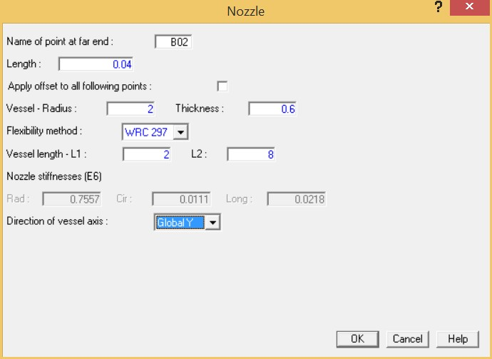

Select Insert > Piping Components > Nozzle.

- Now you must input information about the vessel so that AutoPIPE can automatically compute the nozzle/vessel connection flexibilities. The dialog allows you to define the properties of the vessel used in computing these flexibilities. Generally, the thickness of the vessel wall is entered as the nozzle length for local flexibility of the nozzle/vessel connection. Enter a nozzle Length of
0.04 {12.7}, a Vessel Radius of 2 {600}, and a Thickness of 0.6 {12.7}.
- The flexibility method we will be using for this tutorial is the Welding Research Council Bulletin 297 Nozzle Flexibility Method. From the Flexibility Method list, select WRC 297. Once the Flexibility Method is specified, the dialog provides the additional fields shown above.
- Specify the distance from the nozzle to the closest stiffening ring, or end of the vessel, in each vessel axis direction. Input the following values:
L1: 2 {600}
L2: 8 {2400}
- Place the cursor in the Direction of vessel axis field. Notice that the Nozzle stiffnesses have been automatically computed based on the values we entered in previous steps. From the Direction of vessel axis field, choose the Global Y option.
-
.jpg) Press OK to
close the dialog.
Press OK to
close the dialog. - Before continuing you should save your work up to this point. Select File > Save > Save.